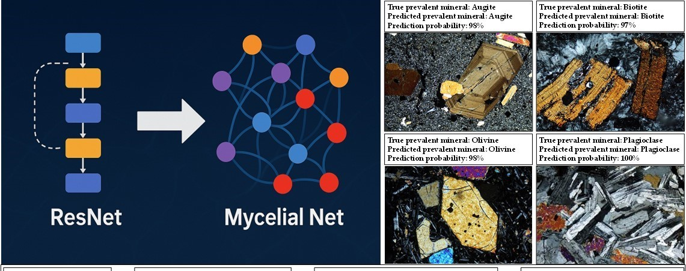

Analisi di Sezioni Sottili Mineralogiche con Modelli Bio-Ispirati (Mycelial_Net)
Il modello Mycelial_Net, da me sviluppato, è particolarmente efficace nel riconoscimento e nella classificazione di immagini complesse grazie alla sua architettura bio-ispirata che riproduce il comportamento adattivo, ridondante e auto-organizzante del micelio fungino.
Applicato alla mineralogia su sezione sottile, questo approccio permette di:
Questo lavoro si collega direttamente al mio articolo pubblicato su *Minerals*, dove introduco il paradigma delle reti miceliali auto-consapevoli per la classificazione di big data geoscientifici:
Riferimento:
MycelialNet: A Biological-Inspired Deep Learning Framework for Analysis and Classification of Big Data in Geosciences
Figura rappresentativa caricata come esempio.
La pagina verrà espansa con esempi di classificazione, mappe semantiche e visualizzazioni multi-layer prodotte dal modello Mycelial_Net.